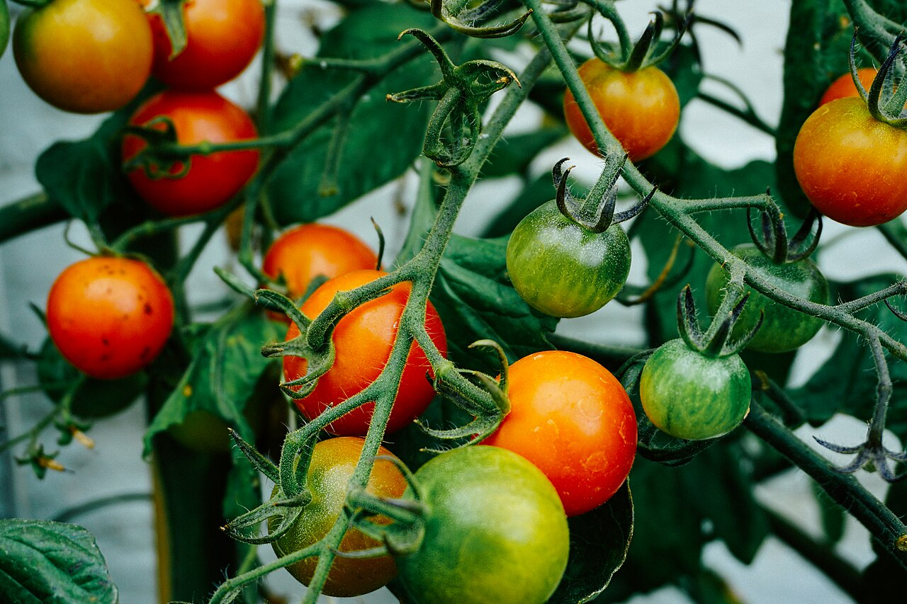

Temperature departure
- Growing season
- +1.1°F
- Summer
- +1.9°F

Photo: Dan Gold, CC0, via Wikimedia Commons
“My tomatoes struggled during the 2024 growing season. It seemed hotter and drier than I expected.”
Follow four clues. Each clue shows the information you need beside the question, so you will not have to search through earlier screens.
Corvallis State University weather station, Oregon. Weather period: April 1–September 30, 2024. Climate reference: 1991–2020 normals.
Use the graph to see when temperatures rose and when precipitation occurred.
| Date | High °F | Precipitation (in) |
|---|
Clue 1 of 4
Compare April–September with the shorter June–August period.
Clue 2 of 4
A seasonal total tells how much rain fell. The daily bars show when it fell and how long the dry gaps lasted.
Clue 3 of 4
Clue 4 of 4
The growing season was warmer and drier than normal overall. Summer was warmer and had slightly above-normal total precipitation, but the rain was unevenly distributed. Together, these patterns help explain why the gardener experienced hot, dry conditions and why the tomatoes may have struggled.